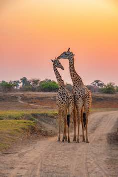
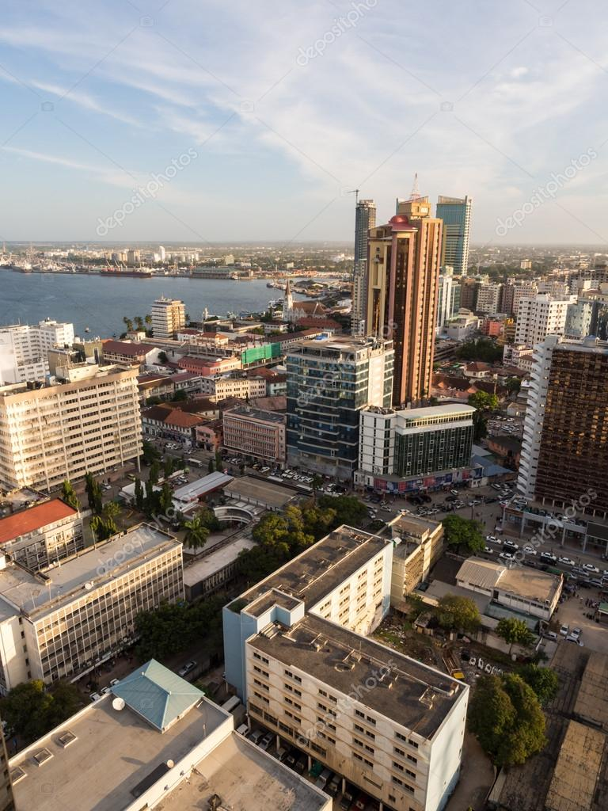
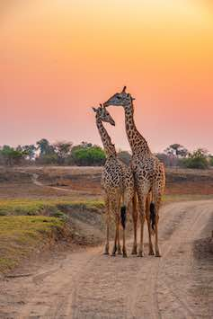
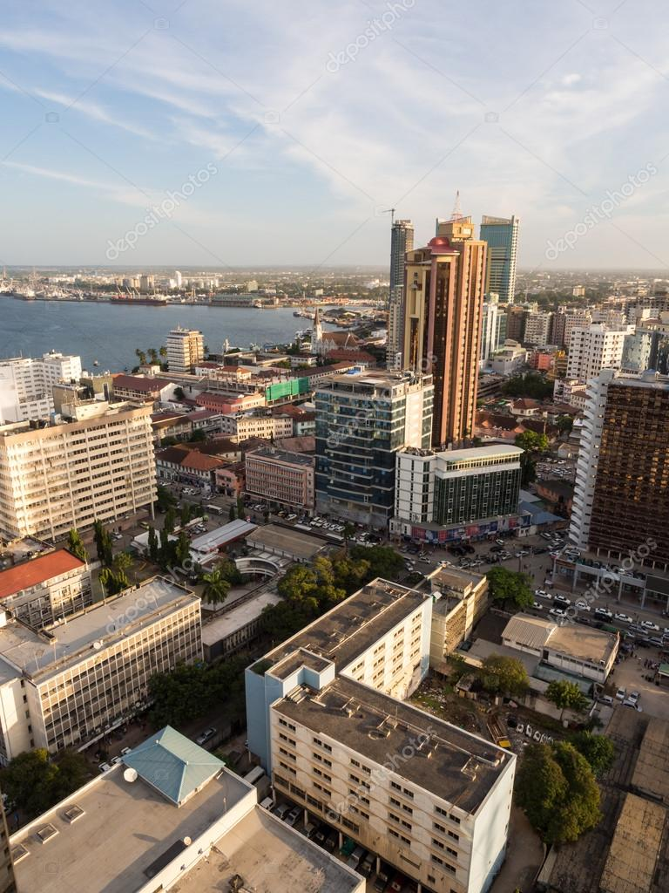
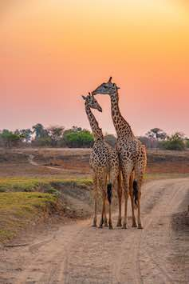
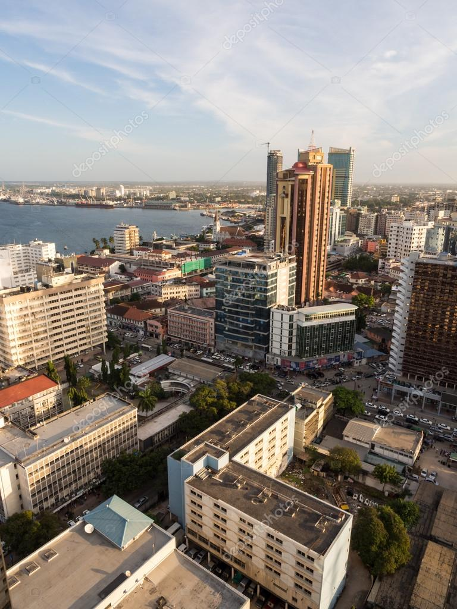

La Tanzanie, située dans l'est de l'Afrique, est une destination époustouflante qui invite à l'aventure et à l'émerveillement. Ce pays fascinant regorge de trésors naturels et culturels qui vous laisseront sans voix. Le mont Kilimandjaro, le plus haut sommet d'Afrique, se dresse majestueusement au-dessus des nuages, offrant aux randonneurs l'opportunité d'une vie pour gravir ses pentes enneigées. Les vastes plaines du Serengeti abritent une faune spectaculaire, des troupeaux de zèbres et de gnous aux majestueux lions, léopards et éléphants. En outre, la Tanzanie abrite l'incroyable Ngorongoro Crater, un écosystème préservé qui abonde en vie sauvage. Le pays est également riche en culture, avec plus de 120 groupes ethniques, chacun apportant sa propre contribution à l'identité tanzanienne. Vous pourrez explorer des marchés animés, assister à des danses tribales envoûtantes et déguster une délicieuse cuisine locale. La Tanzanie offre une expérience de voyage inoubliable, mêlant l'exploration de la nature sauvage à la découverte de cultures vibrantes. Un voyage ici promet d'éveiller vos sens et de vous laisser des souvenirs inestimables pour toute une vie. Alors, embarquez pour cette aventure africaine et découvrez la magie de la Tanzanie par vous-même.

